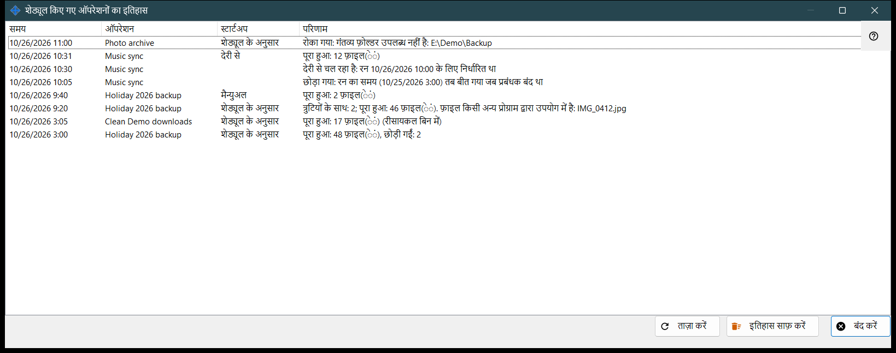
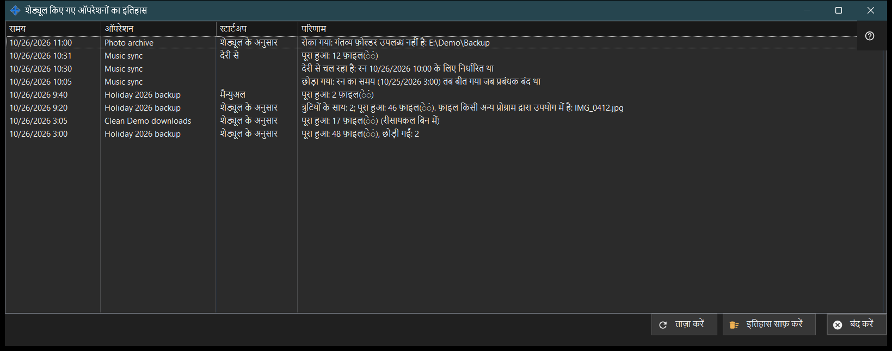

शेड्यूल किए गए ऑपरेशनों का इतिहास
यह किस लिए है
जर्नल में दर्ज शेड्यूल किए गए फ़ाइल ऑपरेशनों के हाल के रन और नोट दिखाती है। यह Share Manager की सेटिंग्स के शेड्यूल किए गए फ़ाइल ऑपरेशन पृष्ठ पर इतिहास.. से खुलती है।


इस क्रम में
- सूची पढ़ें: समय, ऑपरेशन, स्टार्टअप और परिणाम।
- परिणाम लंबा हो तो विंडो चौड़ी करें।
- जर्नल दोबारा पढ़ने के लिए ताज़ा करें दबाएँ।
- इसे खाली करने के लिए इतिहास साफ़ करें दबाएँ और पुष्टि करें।
- बंद करें दबाएँ।
तत्व
कॉलम
समय, ऑपरेशन (उसका नाम), स्टार्टअप और परिणाम। स्टार्टअप शेड्यूल के अनुसार, मैन्युअल, सभी चलाएँ या देरी से होता है, और नोट के लिए खाली रहता है। विंडो खुलने पर और ताज़ा करें पर जर्नल की ताज़ा 200 प्रविष्टियाँ पढ़ती है; वह अपने आप अपडेट नहीं होती।
रन के परिणाम
पूरा हुआ: N फ़ाइल(ें), और जब कुछ छोड़ी गई हों तो उसमें , छोड़ी गईं: M जुड़ता है, तथा हटाने पर (रीसायकल बिन में)। त्रुटियों के साथ: N; पूरा हुआ: M फ़ाइल(ें), जिसके बाद पहला कारण आता है, जैसे फ़ाइल उपयोग में है, पहुँच नहीं है, फ़ाइल नहीं मिली या बदल गई, या डिस्क भरी है। रोका गया: .. जब कोई बाधा रन रोक दे, उदाहरण के लिए पहुँच से बाहर फ़ोल्डर, बिना सहेजे पासवर्ड वाला या बिना पुष्ट सर्वर कुंजी वाला संसाधन, या ऑफ़लाइन डिवाइस। शुरू नहीं हुआ: .. जब परिभाषा अस्वीकार हो, छोड़ा गया: .. और बाधित। जर्नल कोड रखता है, कच्चा त्रुटि पाठ नहीं, इसलिए शब्दावली वर्तमान भाषा के अनुसार होती है।
नोट
जिस पंक्ति में स्टार्टअप नहीं है वह नोट है: छोड़ा गया: रन का समय (..) तब बीत गया जब प्रबंधक बंद था; देरी से चल रहा है: रन .. के लिए निर्धारित था; अस्वीकृत: यह ऑपरेशन पहले से चल रहा है या कतार में प्रतीक्षा कर रहा है; और फिर शुरू हुआ: रुकने का कारण दूर हो गया।
इतिहास साफ़ करें
पूछता है: शेड्यूल किए गए ऑपरेशनों का इतिहास साफ़ करें? ऑपरेशन और उनके शेड्यूल नहीं बदलेंगे. डिफ़ॉल्ट उत्तर नहीं है। यह केवल इस जर्नल को खाली करता है; ऑपरेशन और उनके शेड्यूल बने रहते हैं। इतिहास खाली होने पर बटन अक्षम रहता है।
प्रबंधक सेटिंग · SFTP साझाकरण सेटिंग · एक्सचेंज सर्वर सेटिंग